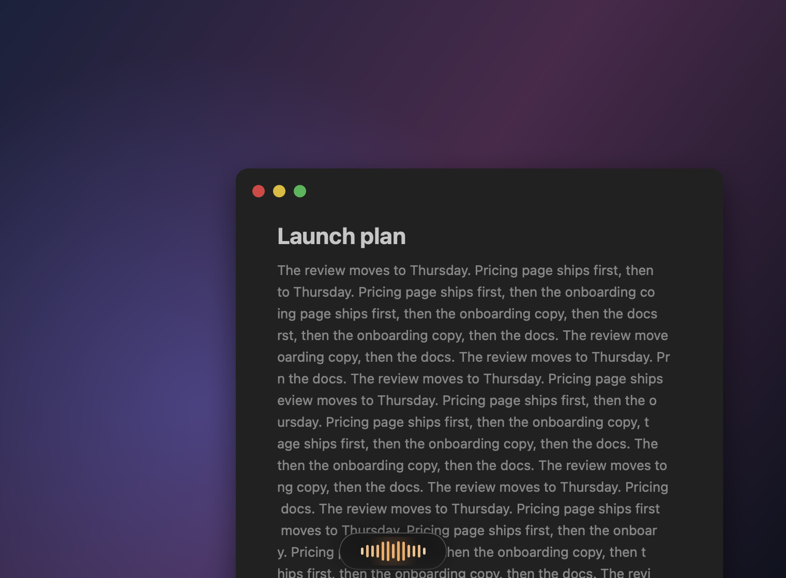

Ambient
Free for Mac and Windows
Your computer.
Just ask.
Talk, get help on your screen,
and leave longer jobs to an agent.
READY WHEN YOU ARE

A little bar. Room for everything else.
control
+
option
Hold. Speak. Release.